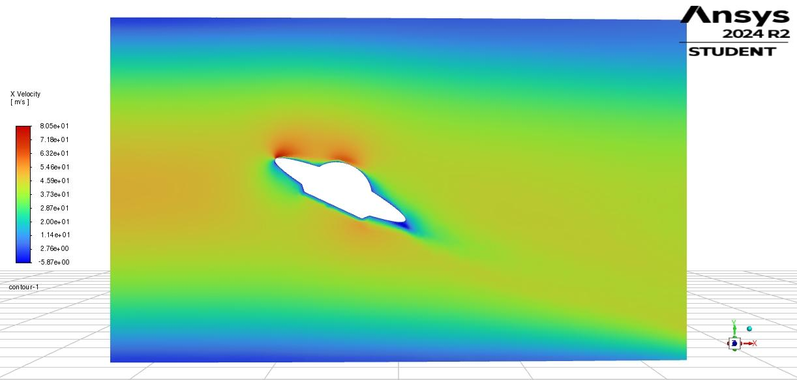
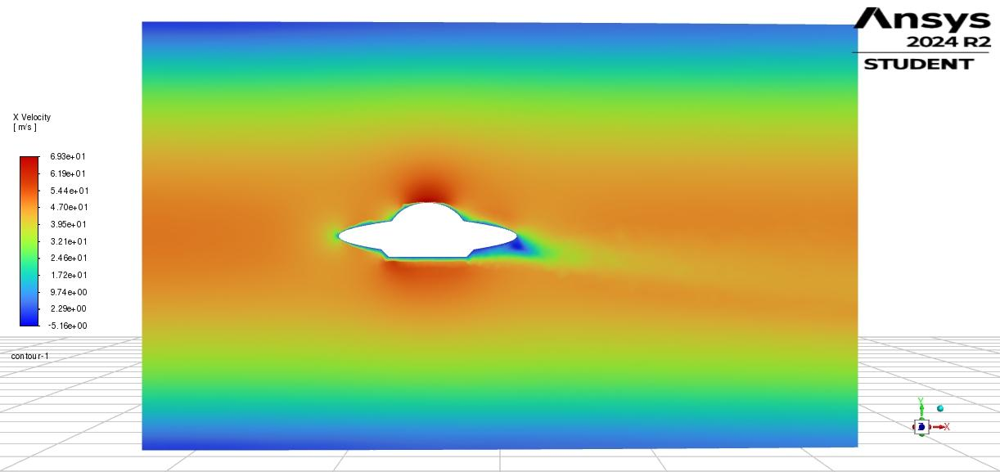
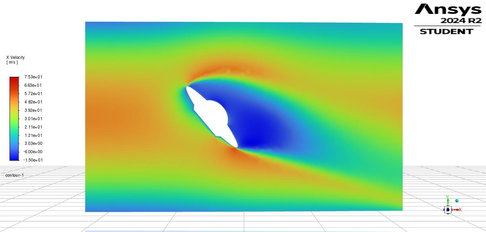
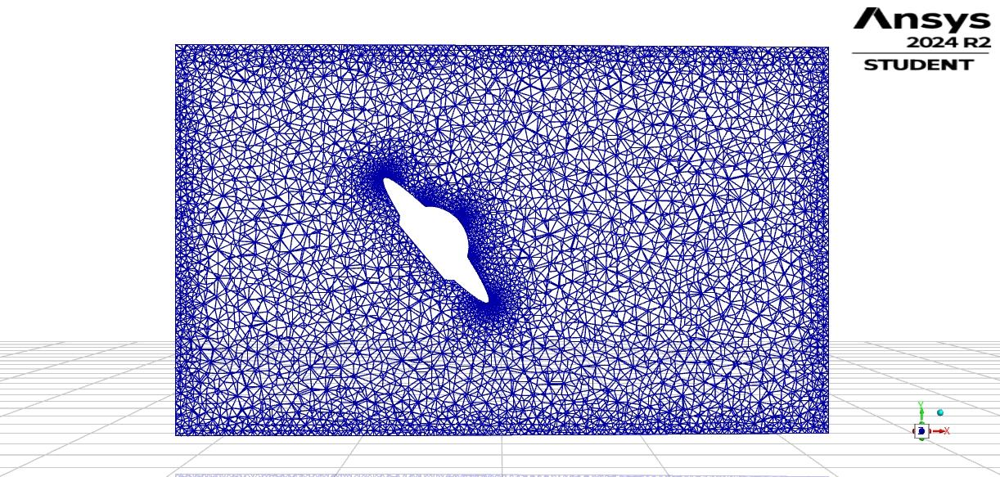

3-D external aerodynamics in ANSYS Fluent. I tested a “flying-saucer” body at three tilt angles
in a cylindrical wind tunnel and compared lift/drag performance and wake structure.

Representative X-velocity contour (θ = 25°).
Setup (class spec)
Domain: Cylindrical tunnel, R = 0.60 m, L = 2.00 m; object rotated by θ = 0°, 25°, 50°.
Inlet profile: u(r) = 50·(1 − (r/R)2) m/s (parabolic; axisymmetric).
Fluid: Air at ρ = 0.35 kg·m⁻³, μ = 1.5×10⁻⁵ N·s·m⁻² (high-altitude condition).
Monitors: Total lift/drag on the body; X-velocity contours on the symmetry plane.
Key Observations
Increasing θ expands the separated region and raises pressure drag; the wake widens and deflects.
Lift peaks near θ ≈ 25° and reduces by θ = 50° as separation dominates.
Mesh is refined around the body to capture shear layers and recirculation (see mesh view).
Figures

X-velocity contour at θ = 0°.X-velocity contour at θ = 25°.

X-velocity contour at θ = 50° (larger separated wake).

Unstructured surface mesh on the symmetry plane (θ = 50°) showing local refinement.
Lift / Drag (total forces)
θ = 0° — Lift ≈ 3.546 N, Drag ≈ 2.750 N
θ = 25° — Lift ≈ 38.082 N, Drag ≈ 12.956 N
θ = 50° — Lift ≈ 39.666 N, Drag ≈ 23.598 N
Values are totals reported by Fluent (rounded to three decimals). Lift increases strongly from 0° to 25°
then plateaus, while drag grows monotonically with tilt due to greater frontal area and separation.